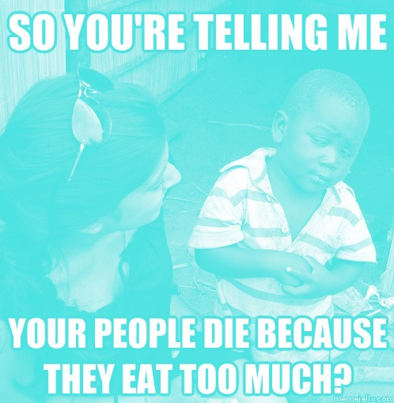
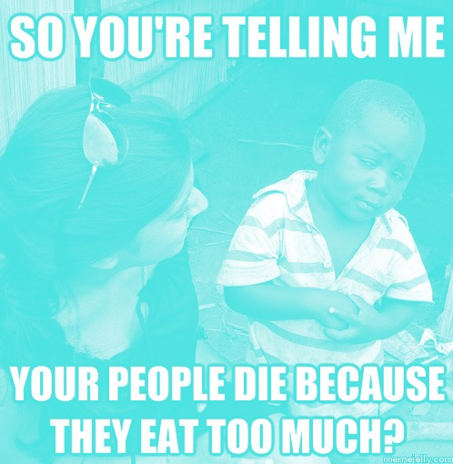

This essay focuses on the internet-meme as it is commonly understood- bearing a fairly rigid formal structure of appropriated imagery rooted in humor or absurdity as a method of cultural transmission and ultimately, cultural survival.
A memetic structure is any cultural institution, space, or community in which cultural products and communication survive based on Darwinian principles, similar to that of genetics. Memes adapt, evolve, and replicate based on their strength relative to the environment they exist within. A memetic structure can be a physical space like a shopping mall or a school campus but more recently, popular culture has defined memetic structures predominantly as virtual spaces- none more infamously than the website 4chan, and in particular, its popular /b/ image board. But as the internet becomes an increasingly political entity, in the advent of the Pirate Party, Wikileaks, and Anonymous, what happens to the content of these memetic structures? What role might memetics play in this radicalization of online space? The internet has always been a place for political action in small subsets and factions, but lately the “popular internet” is being retooled for political and ideological discourse by using highly accessible contemporary systems of online communication (Twitter, Facebook, Youtube). If we look at the most famous meme pool on the internet, 4chan- we now find a growing militarization and politicization of this structure; the internet-meme as a political weapon.
Generally, websites like 4chan have held a fairly benevolent role in popular culture. We see them as a kind of factory for bizarre trends, photoshopped images, and various other in-jokes unique to the vernacular of the web. But most of the memes that arise from this website act on or adapt previously held tropes and stereotypes within other areas of popular culture. However, as our cultural dialogue intermingles with political discourse and activism, so do our cultural products. Political activism is often relegated to a specific subset of people as a means of marginalizing dissent and keeping a movement from becoming relatable to the general public. But political discourse in the meme pool allows dissent to go viral, making it accessible to a broad audience. The mere existence of this kind of structure is an encouraging circumstance. The transmutations that happen within these spaces lack any substantial form of hierarchy. Moderation is not imposed, it happens in generations as content is subject only to the scrutiny of populism.
This structure in itself is reminiscent of prefigurative politics[1]; it is a “temporary autonomous zone”, a term coined by anarchist philosopher Hakim Bey, described as an ephemeral utopia site which eludes traditional dynamics of law and hierarchy. Like Bey’s idea of a temporary autonomous zone, 4chan has no imposing will (short of rules against child pornography) and participants act without regulation or dictation from a command-hierarchy. It is unlikely that there was such a precise ideological motivation behind the creation of 4chan, rather this is an evolving potential that it holds in a broader, highly politicized meme pool. We find proof of this in the adaptation of traditional internet-meme formats to explore political consciousness- conveying a broad group position on an ideological or political topic. The most apt (and most timely) example of this phenomenon is “pepper spray cop”. This meme stems from a photograph circulated of Lieutenant John Pike, a UC Davis police officer casually pepper-spraying a group of protestors. The subsequent memetic exchange involved Lt. Pike photoshopped into iconic photographs and paintings, casually pepper-spraying the subject of the images.
Figure A “Pepper Spray Cop”
Though this meme is primarily intended to be humorous, it also serves some subtle political functions. Most obviously, it reduces the officer’s actions to absurdity as an indirect reprimand on authority gone unchecked. It offers up a kind of lasting stigma in lieu of appropriate institutional punishment. Another byproduct of this meme is the transmission of a political dialogue through media that would otherwise not allow for it. If one person, motivated politically shares a “pepper spray cop” image with another person who has no political motivation- this second person might still share the image for comedic effect. This kind of encryption allows for continued potency of a political message despite the fact that viewers may be sharing it for a myriad of different reasons. Though this is a more common circumstance of political action within the meme pool, in its current state, it is not the most effective. But as political engagement coincides more and more with internet culture, memes that bear an ideological motive will require less cryptography to have their message travel and subsequently, will become more potent and useful over time. Just as the most ardent watchdog of police and military force is now viral video- the same principle might hold true for the replication and transmutation of political discourse- populism will find its root in a decentralized form of memetic exchange. A public voice can be found in this kind of humorous dialogue- and in many ways, it might carry a more immediate reaction than any of its institutional alternatives.
Figure B “Obese American”
The popular internet-meme is a vessel with any number of purposes, and by definition, accessible enough to engage a wide variety of audiences. This alone is not enough to curry any kind of substantive political or social change, but it sets up a structure that allows for immediate input and dialogue on matters normally outside the reach of an empowered public- it offers the chance for political commentary to transfer to political progress. In organizing ideas and dialogues in this method, we allow for a more open approach to social change and lay out a framework with which we might potentially shape cultural nuances through the web. The tools are accessible, and the content survives based on merit and relevancy. There is an ever-broadening arsenal of political engagement but few methods of immediate popular commentary permeate through our culture as effortlessly as the internet meme.
 
